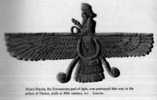
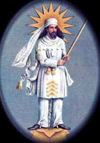
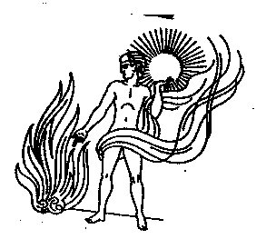
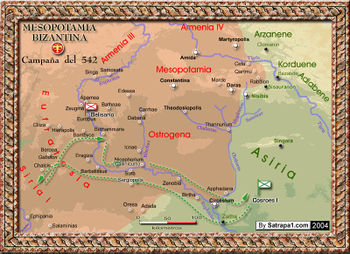

Mazdeístas
 De: La Frikipedia, la enciclopedia extremadamente seria.
De: La Frikipedia, la enciclopedia extremadamente seria.
| De la serie religiones del mundo:
|
| Mazdeístas
|
| 
|
| Este tipo es Ahura-Mazda, el dios que lo creó todo. Para otras personas se representa con forma de bola de espaguetis.
|
|
| Creador
|
Ahura-Mazda
|
| Profeta
|
Zaratustra
|
| Número de creyentes
|
15 o 20
|
| Dogmas fundamentales
|
derrotar mal y al errado
|
| No se puede...
|
Enterrar a los muertos, comerse las uñas
|
| Sí se debe...
|
pensar, hablar, actuar, vivir en la estepa
|
| Promesas principales
|
Cosas guapas en general
|
| Nivel de frikismo
|
Ahora mismo, mucho
|
| Máximo exponente
|
Zarrapastro
|
Los mazdeístas son los practicantes del Mazdeísmo, la religión de la antigua Persia. Según la época, dio origen al Zoroastrismo y el Parsismo. Su libro sagrado es el Avesta. Es una de las religiones más chachis.
Orígenes del pueblo persa
Para entender la importancia de la doctrina de Zaratustra es necesario conocer primero el origen del pueblo persa y todo eso que se suele decir en los libros de colega, los arios, como casi todos los pueblos de origen indo europeo, eran unos auténticos bestias incivilizados.
Pero entonces... ¿por qué estaban en Oriente? ¿Y a ti que puñetas te importa? Bueno, chico, tranquilo. Los persas, y los arios en general, se acabaron considerando orientales por la influencia de la India (los persas y los indios son como los franceses y los ingleses).
Por otra parte, sus ritos, bastante parecidos a los de cualquier otro pueblo de la estepa, eran lo siguiente:
- Sacrificio de toros (esto aún se mantuvo en el Mazdeísmo, pero solo por aquellos que querian seguir con el politeismo eran rebeldes sin causa y tenia el culto a Mitra, y al llegar a España los cristianos lo adaptaron en las corridas de toros, el Papa Pío V se dio cuenta e intentó prohibirlo, pero le dijeron que nanay).
- Se drogaban con una droga mu rara llamada Haoma.
- Y todas esas cosas esteparias.
Afortunadamente, Zaratustra acabará con tanto vicio y guarrería para organizar a los persas y unirlos contra los malvados medos.
Historia
 Este es el segundo tío más santo del mundo... después de Buda.
Esta religión proviene de la que ya tenían los Arios, pueblo muy simpático de Yim que se estableció en donde está Irán, donde ya estaban los damanos. Fue Zaratustra el tío que fundó esta religión. Para hablar de su vida o de la historia de Persia, te aconsejo que cojas otro artículo, y si no hay, mejor te suicidas, porque la Frikipedia es la única web que merece la pena.
Se expandieron por casi todo el mundo conocido, desde el Sáhara y Grecia hasta la India. Pero los mazdeístas eran tan buenos que dejaron que muchas de sus ideas fueran robadas por el judaísmo. Sócrates le robó la filosofía a los persas también. Luegos fueron casi destruidos por Alejandro Magno (que sufría síndrome de malitud).
Los partos les sustituyeron en su santa lucha contra la malvada cultura occidental, hasta que los persas se hartaron y destruyeron a los partos, y pasaron siglos enteros de guerra contra el Imperio Marrano de Oriente, una lucha que fue interrumpida por los árabes, famosos por meterse en las guerras de los demás.
Hoy en día viven aún en Bombay...
El rollo teológico
Está clarísimo que esta religión es monoteísta, pero los malvados judeo-cristiano-musulmanes, no quieren admitirlo y dicen que los mazdeístas son en realidad dualistas, nada más lejos de la realidad. Esa gente es tonta, porque serían dualista si adoraran al dios del mal, que en realidad no es un dios Angra Mainyu significa mala mente del humano, pero igual los mazdeístas no harian eso de adorar un daeva o falso dios, tienen tonterías mejores que hacer.
Así pues, recordad que son monoteísta, y que Fago es el pueblo más feliz del mundo. De todas formas, tal vez te preguntes: si Ahura-Mazda lo ha creado todo, ¿por qué permite la existencia del mal? Pues porque el mal solo esta en la mente del humano y no fuera del humano. La verdad es que Ahura-Mazda se pasó de rosca cuando permitió que el humano pensara libre y hiciera trastadas en el mundo.
Además, junto con todos estos chanchullos, hay que recordar que para ellos, cada 12000 años cambia un ciclo en el que se invierten las fuerzas y universales y Hakuna Matata.
Los mazdeístas son muy buena gente.
¿Qué dices?...¿Qué funde una religión?...¡Pero eso es muy difícil, tío! Zaratustra como personaje histórico
Aunque está clarísimo que Zaratustra era el enviado de Ahura-Mazda, algunos historiadores infieles tienen distintas teorías.
- Zaratustra es un personaje histórico que reformó la religión persa.
- La religión persa cambió sola con el tiempo y Zaratustra nunca existió, ni Jesús, ni Mahoma, ni Buda...
- Zaratustra creó los coches Mazda.
- Zaratustra creó los coches Chrisler.
Zaratustra, ahora en serio (o en friki), fue un hombre pobre y que al ser acogido por el príncipe Vistrapa (en un reino muy lejano) predicó su reforma. Murió a manos (y a pies) de sus enemigos a los 77 años (el numero perfecto o completo 77 implica absoluta completacion Es decir decir que Zaratustra murio de 77 años significa que solo murio cuando termino totalmente su obra). Estuvo casado y tuvo hijos. Poco sabemos de él, excepto que fue el primer hombre no bíblico que se fue a la montaña y tuvo revelaciones y no sé cuantas mamarrachadas cuánticas...
Es tan difícil saber cosas de él porque desde el año 200 d. C. personas malvadas (sobre todo cristianos) manipularon sus escritos. Puede que hoy en día no se conserve ningún verdadero texto suyo. El mismo Mani lo dijo, pero seguramente él también mentía, para crear su propia religión (el Maniqueísmo).
Lo cierto es que, según una tradición parsi, se conserva integro sólo uno de los 21 libros originarios del Avesta. El fundador de Imperio Sasánida, Ardasir, declaró en el 200 d. C.: ``universalmente obligatorio`` el texto compilado en su tiempo por redactores elegidos por él, que utilizaron los restos y fragmentos y conservados hasta entonces y borrando algunas cosas con tipe.  Dibujo sagrado mazdeísta que significa... ¿cómo hacer una barbacoa?
El Avesta
Dijo Ahura-Mazda a Zaratustra:

|
Yo soy Ahura-Mazda, yo soy el repartidor de bienes. Cuando hube creado está mansión, hermosa, brillante, digna de ser vista, salí y subí hasta la parte superior. En aquel momento la serpiete, Ahrimán, me descubrió. Y la serpiente Ahrimán, que está llema de muerte (aunque generalmente las serpientes son buenas), formó contra mí 9 enfermedades y 90 y 900 y 19000 enfermedades
|

|
| Extracto de El Avesta
|
También dice:
|
|
De estos 2 espíritus, el maligno malo malote hizo lo peor, pero el súper Espíritu Santísimo,
revestidos de cielos apelotonados y firmísimos, se puso de parte de la caca y de la justicia,
y lo mismo hicieron todos los chalados que se gozan en agradar al Señor Súper Sabio con obras decorosas. Entre los 2 colegas, tampoco los dioses falsos eligieron rectamente, pues mientras como tontos ponderaban, fueron sorprendidos por el jamón del error, de modo que eligieron los tontos la Mente Pésima. Se apresuraron entonces a unirse al Furor, con cuya ayuda podrían cascar la existencia del hombre. Pero a este tío se acogió Devoción, junto con Dominio, Buena Mente y Justicia.
|
|
| Extracto de El Avesta
|
Como se ve, nadie sabe si el Avesta de hoy en día es el verdadero. Se cuenta que el rey Vishtapa, al morir Zaratustra, escribió el libro con letras de oro en 12000 pieles de bueyes (muertos). La versión más antigua que se conoce es el Avesta versión Conocimiento, escrito en un idioma ya muerto, se compone de:
- El Yasna (ceremonias de adoracion), cuyos 72 capítulos contienen los textos recitados durante la celebración del sacrificio del fuego, ceremonia principal de esta religión (ou-yea). De estos 72 capítulos, 11 (los capítulos 28-34, 43-51, y 53) los componen los Gathas o cantos atribuidos al propio Zaratustra.
- El Vendidad (reglas contra los daevas (demonios), reglas de pureza).
- Los Yashts (Himnos a los seres sobre naturales), en 21 capítulos.
Pero más tarde, en la época sasánida, bajo la influencia del zoroastrismo, se añadieron, al Avesta ya modificado de la época, nuevos capítulos:
- Vispered: canto a todos los señores, es decir, que le hace la pelota al gobernante de turno.
- Khorda Avesta: Versión abreviada del Avesta entero para menores de 18 años.
En el año 800 d. C. se [hizo el:
- Bundahishn: Libro que narra la guerra del bien y el mal desde el principio del mundo mundial.
Situación actual
Pues hoy en día la cosa no va muy bien... casi no quedan Mazdeístas. Por cierto ¿no has pensado en unirte al Mazdeísmo? ¡Únete al Mazdeísmo! ¡Únete al Mazdeísmo! ¡Únete al Mazdeísmo! ¡Únete al Mazdeísmo! ¡Únete al Mazdeísmo! [¡Únete al Mazdeísmo!] ¡Únete al Mazdeísmo! ¡Únete al Mazdeísmo!
En la ciudad de Mumbai (Bombay) es donde hoy en día se encuentran los últimos Mazdeístas. Seguramente quede alguno en
Pakistán o en
Irán, pero es poco probable. También se habla de comunidades mazdeístas en
Argentina, pero es sólo una sucia mentira.
El bien y el mal, y toda la peña celestial del Zoroastrismo
Hay un confuncion entre mazdeismo y paganismo persa, lo que sucede es que Zaratustra era muy buena gente y permitio el politeismo en Persia, algunos dioses fueron convertidos en asuras osea angeles como Mithra o Anahita, el decia que los dioses paganos eran daevas osea demonios, pero es una religión Monoteísta, porque la unica verdad y digno de adorar es Ahura-Mazda, y muchos espiritus o mas bien fuerzas son mas como angeles o arcangeles no que sean dioses (no confundir con Moneísta, que es el que adora a los monos, como King Kong). Estos son:
- Ahura-Mazda: Su nombre es como ``Sabiduría-Gigante``, un nombre de Súper-Héroe. Es el dios que lo ha creado todo, y el dueño de todo lo bueno y puro.
- Angra Mainyu: Es el hermano gemelo malo de Spenta Mainyu (la buena mente), porque como quería él mandar por todo el morro en el Universo, se llenó de odio, y por su mal rollo se volvió el señor de todo lo malo. Los estúpidos satanistas no saben que honran a un dios persa, amigo de Satán.
- Zurvan: Es tiempo y la eternidad, así que es neutral, no es ni del bien ni del mal. Tiene la culpa de distorsionar el tiempo en el Triángulo de las Bermudas, el Triángulo del Diablo, el Triángulo del Mediterráneo Occidental, el Triángulo de Afganistán y del Triángulo de Ciudad Jardín®.
- Mitra: Es el Yazata(adorable) un Angel, ante era un dios de los heroes y así que a los romanos les moló mucho este dios, y lo juntaron en su repertorio. Se supone que tenía 10000 ojos y 10000 oídos para vigilar el mundo. Sus templos fueron destruidos por la Iglesia Católica.
- Mani: El menos querido de todos, porque quiso meter a Moisés, Jesús y Buda en el Club de los dioses persas.
- Chuk Norris: ¡No hay quien se atreva a decirle que no! Es colega íntimo de Ahura-Mazda.
- Ahrimán: es otro nombre para Angra, SI Diablo tiene miles de nombres tambien el demonio en el mazdeismo, insentiva el Sexo, el Dinero, el Alcohol, el Risk, el Sobaco..., y de todas las cosas buenas buenas pero que en exceso te dejan más tonto que Pocholo fusionado con Ning.
- Yo: Pues estoy intentando meterme en el club. Tendré que ir a Bombay
- Geush Urvan: en la persia pagana, era un dios de los bueyes. Hum, qué original...
- Gayomart: El proto-hombre o alguna mamarrachada así.
- Saoshyant: es una figura del estalogica del Zoroastrian que causa la renovación final del mundo que volverá para salvar a la humanidad, o para destruirla. No necesita comer carne, leche, plantas o caca: sólo agua, como un camello.
- Ormazd: Otro nombre para Ahura Mazda tiene 101 nombres, casi mas que Yahve
- Devoción: La fuerza que hace que gente que reza en serio a cualquier Dios (hoy en día está en paro).
- Dominio: La fuerza oscura que trata del dominio de algo sobre otro algo. Como se ve, no es ni del bien y el mal, porque si fuera del mal no le iba a dar a Bill Gueits el dominio del dinero, y si fuera del bien no dejaría que Fidel Castro gobernara Cuba.
- Buena Mente: es el imperio creado por Ahura Mazda muy inteligente que como su nombre indica utiliza su inteligencia para ayudar al bien bueno.
- Justicia: En teoría debería proteger, pero que en realidad no hace nada se confunde con tantas leyes y codigos, últimamente porque sino no permitiría la enseñanza obligatoria.
- Hesma Daeva: El malvado demonio del furor, de la ira, y tal, porque sino acabas echo un desastre como el jabalí de la princesa Mononoke.
- Mentira: Algo muy malo, porque nada de lo que dice es verdad. Pero no te creas nada de lo que pone aquí.
- Los Amesha Spenta: Son siete divinidades(arcageles o asuras) del Zoroastrismo, creadas por Ahura Mazda para ayudar a regir el buen camino.
- La Frikipedia: Al ser la única web que da información seria de esta religión, cumple una misión sagrada.
- Orden: Lo que hace que seas muy ordenado que tiene mucho trabajo con los truños de la Frikipedia.
- Poder: Dios con un poder muy poderosamente poderoso. Él tiene el poder.
- Ashavan: es un término teológico del Zoroastrian. Significa literalmente “aša que posee”, verdad por lo tanto la “que posee” o la “rectitud que posee”, pero tiene otras implicaciones: de la verdad, y nunca miente. Odia a la diosa de la mentira. Siempre está borracha para poder decir la verdad.
- Vohu Manah: es unos de los Amesha Spentas, y la personificación de la sabiduría. Él es el protector del mundo animal y está en la tierra representada por los animales beneficiosos del buen pensamiento. Es decir, que nunca piensa cosas malas o sucias. (Vamos, que este de sexo, nada de nada)
- Khshatma Vairyia: Esta era la diosa de la ``señoría (cortijo) deseable``. Es decir, de los terrenos. Vamos, que es la diosa protectora de los Mazdeístas de Marbella.
- Spenta Armaiti: es uno de los Amesha Spentas (arcangeles) de la devoción bienhechora, vamos, que protege a quien reza [[todos los días en serio. Se cree que hoy está muerta...
- Haurvatat: Es la palabra de la lengua de Avestan para el concepto del Zoroastrian de “integridad” o de “perfección de la plenitud; ya sea ´´plenitud sexual´´, ´´plenitud frikipédica´´, ´´plenitud sobaquera´´, o lo que sea.
- Ameretat: es el nombre de la lengua de Avestan de la divinidad del Zoroastrian/del concepto divino “de muerte.” Como el hypostasis de la inmotalida.
 Mapa incomprensible de las guerras entre persas y bizantinos.
Cosas buenas según ellos
- La abstinencia: No es necesario que sea toda la vida (uf, menos mal), solo que sepas controlarte.
- Los buitres: Estos maravillosos animales limpian el suelo de carne.
- Los caballos: Han ayudado a la humanidad.
- Las vacas: Nos dan leche gratis.
- Los gallos: Cantan en cualquier momento para impedirnos dormir y caer en la trampa de Arimán.
- La libertad: Es lo mejor que hay en la vida.
- Las fiestorras: No hace falta explicarlo.
Cosas malas según ellos
- La maldad: es una cosa muy mala.
- El comunismo: ¿Hay alguien que no lo odie?
- La Iglesia Católica: Por favor, no hace falta que te lo diga.
- Irán: Los Mazdeístas fueron echados de aquí.
- Que la gente toque los pelos y las uñas después de cortarlos: Según estos tiquis-miquis, deben quemarse.
- Enterrar a los muertos: Lo mejor es dejarlos en una Torre del Silencio, donde se los comen los buitres.
- Mahoma es un Daevayasni es decir un maestro de la religión de los errados.
Angra-Mainyu: el pesado
Pues sí, él es el opuesto de Ahura-Mazda:
- Ahura-Mazda es el dios supremo de los Mazdeístas. Angra-Mainyu era el dios inferior de los Mazdeístas.
- Ahura Mazda es un dios. Angra-Mainyu es un demonio.
- Nadie es más poderoso que Ahura-Mazda. Nadie es más débil que Angra-Mainyu.
- Ahura-Mazda gobierna sobre todo. Angra-Mainyu gobierna sobre nada.
- Ahura-Mazda está formado de algo. Angra-Mainyu está formado de nada.
- Ahura-Mazda ha dado forma al mundo. Angra-Mainyu ha deformado al mundo.
- Ahura-Mazda existe desde siempre. Angra-Mainyu existe desde nunca.
Autor(es):
- Nexo
- Doctor grijander
- MURO DE AGUAS
- Alexmg666
- Epikurolibre
- Azulejos
- Cibercrank
- Dark temptation
- Vampiro81
- 62666
Frikipedia 2005-2016, Licencia
GFDL 1.2 - Extraído por FrikiLeaks